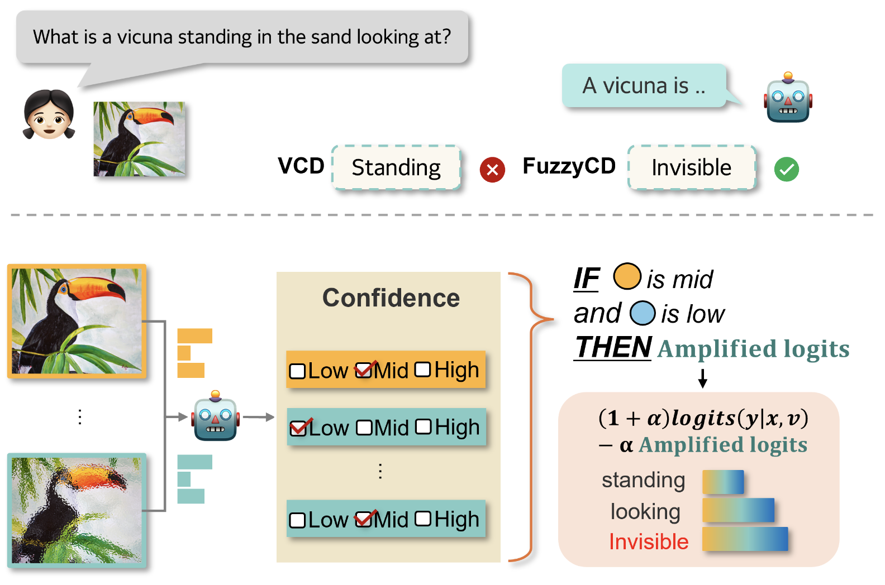

|
-ˋˏ ｡ﾟ Yoonji Kim ﾟ｡ ˎˊ-
I am an M.S. program student in Computer Science at Yonsei University, advised by Prof. Sung-Bae Cho. I received my B.S. degree in Computer Science and Engineering from Kyung Hee University in February 2024.
My research focuses on trustworthy large language models (LLMs), vision-language models (VLMs), and lightweight small language models (SLLMs). I’m particularly interested in how these models understand and reason about language and visual inputs, and how we can improve their reliability, interpretability, and efficiency in real-world settings.
Email /
Github
|
|
|
PAKDD 2026
|
Adaptive Beam Search with Shannon Entropy for Data-centric Reasoning in LLMs
Yoonji Kim, Yujin Jeong, Jieun Kim, Sung-Bae Cho
PAKDD, 2026
|
|
JKSISE 2025
|
Transformer와 Kalman Filter 결합을 통한 해운시장의 전략적 의사결정 지원 인공지능 프레임워크
Donggyun Kim, Yoonji Kim, Sangwha Kim, Yoona Kim, Hieonn Kim
Journal of Korean Society of Industrial and Systems Engineering, Vol. 48, No. 4, pp. 57–70, 2025
|
|

|
Fuzzy Contrastive Decoding to Alleviate Object Hallucination in Large Vision-Language Models
Jieun Kim, Jinmyeong Kim, Yoonji Kim, Sung-Bae Cho
ICCV, 2025
page
/
paper
|
|
KSC 2023
|
다중 회귀분석을 이용한 지하철 지연요소 예측
Yoonji Kim, Young-Koo Lee
한국소프트웨어종합학술대회 (KSC), 2023
|
|
KCC 2023
|
효율적인 질의 페더레이션을 위한 Apache Calcite 어댑터 아키텍처
Kayoung Kim, Yoonji Kim, Wonjun Choi, Eunji Choi, Young-Koo Lee
한국컴퓨터종합학술대회 (KCC), 2023
|
|
YAICON 2025
|
우수상 — YAICON, 2025
Ender Dragon 처치 에이전트 개발
|
|
NIPA 2025
|
우수상 — NIPA 오픈소스 컨트리뷰션 아카데미, 2025
GitHub 기반 에이전트 개발을 위한 MCP 서버 구현
|
|
Seoul Line
|
Seoul Line – Forecasting Shipments
Transformer 기반 매칭·예측 모델 학습 코드 개발
TA, 2025
|
|
Metric Studio
|
Metric Studio – Personalized Wine Service Platform
추천 서비스용 데이터 거버넌스 파이프라인 구축
인턴, 2023
|
|
{kind=link}